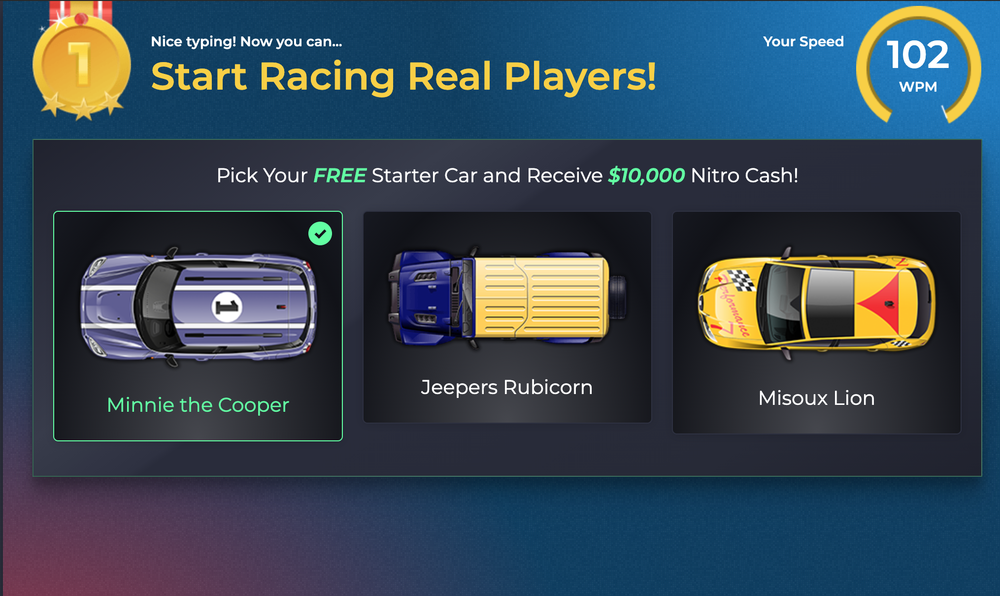

Many of the activites David partakes in require usage of his hands. He likes to play games and type. Typing has been an outlet for David as he enjoys the clicking sound of the keyboard and the satisfaction provided from seeing the letters on the screen appear in a fast arrangement. His highest known typing speed was recorded to be 100 wpm. Having had an interest in gaming since childhood, he has used different combinations with his fingers and placement to perform in video games. Playing game releases stress from David and offers a cure to boredom.
David loves manga. Stemming frorm his love of anime and books as a child he found a way to combine the best of both worlds. He started reading manga seriously in the 7th grade. Since then, he has read hundreds of manga of all different genres.
Sheer competitiveness has raised David's levels in different fields. When he competes in something he enjoys, he wouldn't want to be a side character but someone who can be recongized for their skills. Some examples are some of his other hobbies: Squash, Super Smash Bros Ultmate, typing, schoolwork, etc.
David finds interest in software based programs and likes to discover new things about them. Recently, he has experiemented in editing and created a video project to display the culmination of his work.